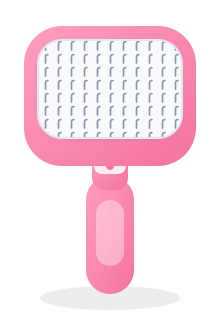
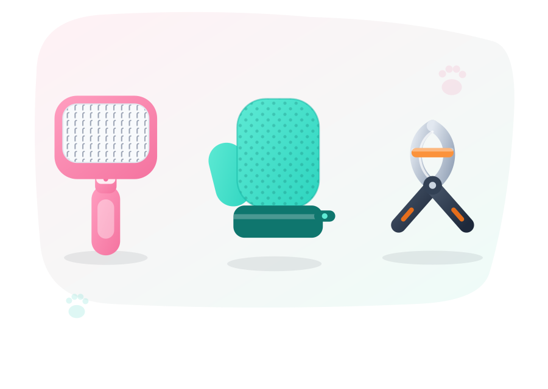
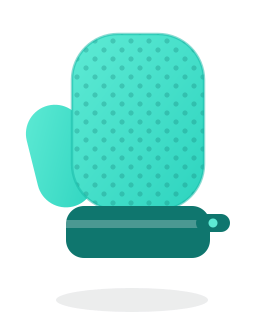
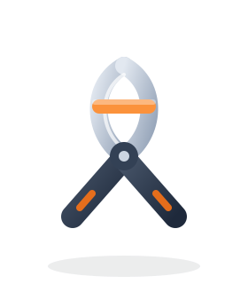

Brosse auto-nettoyante
Nettoyage en 1 clic · Coloris : Rose
19,90 €
My Fluffy Paws
Le confort de votre compagnon, en toute simplicité.
Trois accessoires pensés ensemble : la brosse auto-nettoyante, le gant de massage et le coupe-griffes sécurisé. De quoi transformer le toilettage en moment de complicité, à la maison.

L'offre du moment
Le même contenu que les 3 articles achetés séparément… sans payer le prix fort.
Les 3 achetés séparément
Total 49,70 €
Meilleur choix
Le Kit Complet
29,90 €
Vous économisez 19,80 € + Livraison Offerte
Brosse + Gant + Coupe-griffes · Coloris de la brosse au choix
Sans engagement
Pas de souci : chaque accessoire est aussi disponible à l'unité.

Nettoyage en 1 clic · Coloris : Rose
19,90 €

Retient les poils pendant les caresses
14,90 €

Butée de sécurité anti-blessure
14,90 €
💡 À l'unité, les 3 reviennent à 49,70 €. Repasser au kit complet à 29,90 €
Dans le kit
Chacun a son rôle : démêler, masser, entretenir les griffes.
01
Un appui sur le bouton et les picots se rétractent : les poils se détachent d'un bloc, vous les jetez, c'est terminé. Plus besoin de retirer les poils un par un.
Choisissez votre coloris :
Sélection : Rose
02
Il ne ressemble pas à un outil de toilettage — et c'est bien l'idée. Vous caressez votre animal, les poils morts restent dans le gant. Un vrai moment de complicité, même pour les plus craintifs.
03
La butée de sécurité anti-blessure limite la longueur coupée : impossible d'aller trop loin et de toucher la partie vivante de la griffe. La coupe des griffes sans la boule au ventre.
Au lieu de 49,70 € à l'unité — soit 19,80 € d'économie, livraison offerte.
On répond à tout
Une dernière hésitation ? La réponse est probablement juste en dessous.
La brosse : appuyez sur le bouton, les picots se rétractent et les poils partent en un bloc. Un chiffon humide sur la tête de brosse une fois par mois suffit.
Le gant : passez la main dessus pour décoller les poils, puis rincez-le à l'eau tiède avec un peu de savon doux. Laissez sécher à l'air libre.
Le coupe-griffes : essuyez les lames après usage et gardez-les au sec pour éviter toute trace d'oxydation. Rien ne va au lave-vaisselle.
Oui. Il est équipé d'une butée de sécurité qui limite la longueur de griffe engagée entre les lames : vous ne pouvez pas couper trop court et atteindre la partie vivante (la « veine »). Le ressort de sécurité verrouille aussi l'outil quand il n'est pas utilisé.
Notre conseil : coupez toujours par petites touches, en restant avant la zone rosée visible sur les griffes claires. Sur griffes noires, allez-y millimètre par millimètre.
Les trois accessoires sont conçus pour les chiens et les chats, à poils courts comme à poils longs.
Le coupe-griffes s'utilise sur les petits gabarits (chatons, petits chiens) comme sur les griffes plus épaisses des grands chiens. Pour les chats les plus sensibles, commencez par le gant de massage : il fait accepter le toilettage en douceur.
La brosse existe en Rose, Bleu et Gris : seul le coloris change, le modèle et les picots sont strictement identiques.
Sélectionnez votre coloris directement dans la section « La Brosse auto-nettoyante » : il est enregistré dans votre panier, que vous preniez le kit complet ou la brosse seule.